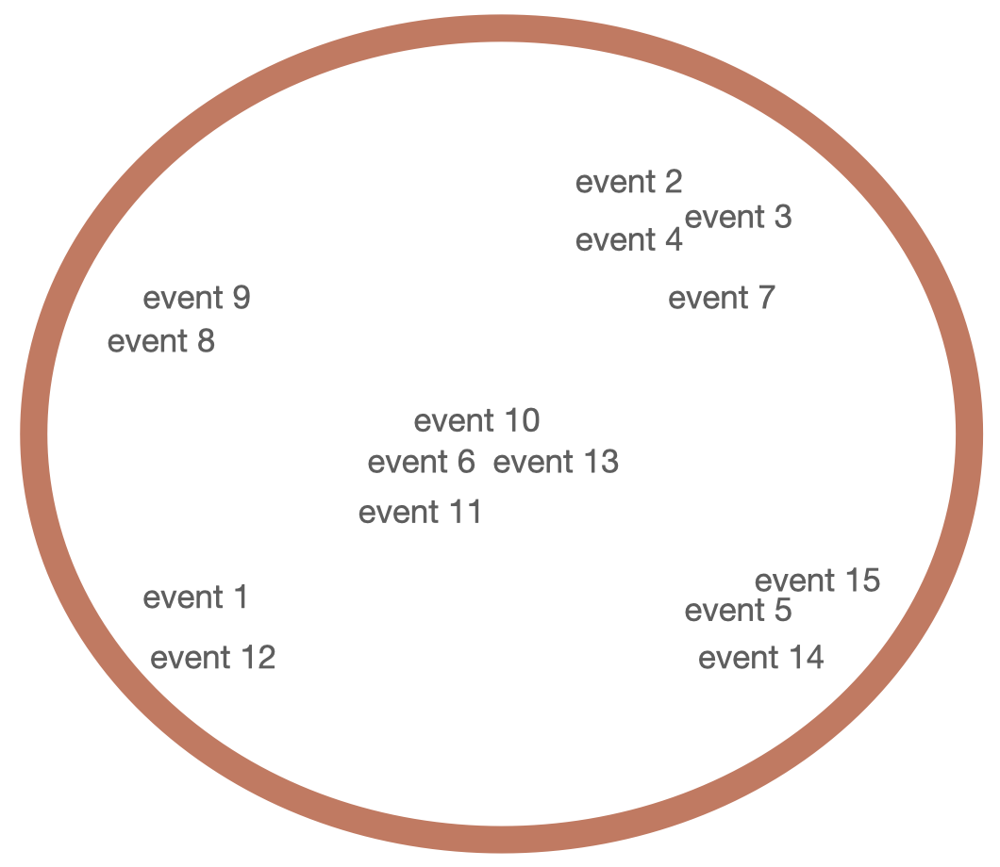

<!DOCTYPE html>
<html>
  <head>
    <script src="jspsych/dist/jspsych.js"></script>
    <script src="jspsych/dist/plugin-instructions.js"></script>
    <script src="jspsych/dist/plugin-survey-html-form.js"></script>
    <script src="jspsych/dist/plugin-canvas-keyboard-response.js"></script>
    <script src="jspsych/dist/plugin-preload.js"></script>
    <script src="jspsych/dist/plugin-html-button-response.js"></script>
    <script src="jspsych/dist/plugin-image-button-response.js"></script>
    <script src="jspsych/dist/plugin-video-button-response.js"></script>
    <script src="jspsych/dist/plugin-free-sort.js"></script>
    <script src="https://unpkg.com/@jspsych-contrib/plugin-pipe"></script>
    <link rel="stylesheet" href="jspsych/dist/jspsych.css">
    <style>
      #quitButton {
        position: fixed;
        bottom: 10px;
        right: 10px;
        padding: 10px;
        background-color: lightgray;
        color: black;
        border: 2px solid black;
        cursor: pointer;
        font-size: 16px;
      }
    </style>
  </head>
  <body></body>

  <button id="quitButton">Quit</button>

  
  <script>
      document.getElementById('quitButton').addEventListener('click', function() {
      jsPsych.abortExperiment('The participant chose to quit the experiment.');
    });

  var jsPsych = initJsPsych({
    default_iti: 250,
    on_finish: function() {
      //window.location = "https://connect.cloudresearch.com/participant/project/478F668072/complete";
      jsPsych.data.displayData();

    },
    show_progress_bar: true
  });

  
      //-------------------------------------------------------------------------------------------------------------------------------------
  //experiment variables
  const mturk_pilot_mode = true
  const data_collection = true

    // capture info from mturk/connect, except in test mode
  if(mturk_pilot_mode) { 
    var study_id = 'pilot';
    var session_id = 'pilot';
     participant_id = 'pilot_' + String(jsPsych.randomization.randomID(10)) //overwrite the participant id
  } else {
    participant_id = jsPsych.data.getURLVariable('participantId'); 
    var assignment_id = jsPsych.data.getURLVariable('assignmentId');
    var project_id = jsPsych.data.getURLVariable('projectId');
  }

jsPsych.data.addProperties({
    mturk_participant_id: participant_id,
    mturk_assignment_id: assignment_id,
    mturk_project_id: project_id
  })

  const filename = `${participant_id}.csv`; //this needs to be assigned after running the ifelse statement
    //---------------------------------------------------------------------------------------------------------------------------------------

  var preload = {
    type: jsPsychPreload,
    auto_preload: true
  };


  var duration = '4 minutes';
    var amount = '$1';
    var consent = {
    type: jsPsychHtmlButtonResponse,
    stimulus: '<p><b>Consent Form</b></p> <div style="text-align:left;' +
        'background-color:lightblue; padding:2vw; max-width:80vw;">' +
        '<p><b>Purpose:</b> The purpose of this study is to understand ' +
        'how people think about the physical and social world.</p>' +
        '<p><b>Procedures:</b> In this study, you will watch videos, ' +
        'read sentences, or see pictures, and answer simple questions ' +
        'about them. This study should take approximately ' + duration + 
        '</p><p><b>Participation:</b> Participation in this study is ' +
        'voluntary. If you decide to join now, you can change your mind ' +
        'later. ' +
        '</p><p><b>Payment:</b> You will be paid $15.00/hour ' +
        'for participating in this study. Given the estimated duration of ' +
        duration + ', your payment will amount to ' + amount + '.</p>' +
        '<p><b>Risks and benefits:</b> There are no risks associated ' +
        'with participating in this study. There are no direct benefits ' +
        'associated with participating in this study. </p><p><b>Use of ' +
        'data by study researchers:</b> The research team led by Shari ' +
        'Liu at JHU will have access to your answers. ' +
        '</p><p><b>Publication of results:</b> The results of the research ' +
        'may be presented at scientific meetings or published in scientific ' +
        'journals. Your individual responses may be published. We will ' +
        'never publish your name, the date that you participated, and any other ' +
        'information that could be used to identify you. </p><p><b>' +
        'Researcher contact information:</b> This study is run by Dr. ' +
        'Shari Liu at JHU. If you have any questions or concerns about ' +
        'this study, or in the very unlikely event of a research-related ' +
        'injury, please contact sliu199@jhu.edu. ' +
        '</p><p><b>Research rights information:</b> If you have questions about ' +
        'your rights as a research participant or feel that you have not ' +
        'been treated fairly, please call the Homewood Institutional Review ' +
        'Board at Johns Hopkins University at (410) 516-6580. If you have ' +
        'any questions or issues completing the survey, please email Shari ' +
        'Liu at sliu199@jhu.edu. </p> </div>' +
        '<p> Do you consent to participate? </p>',
    choices: ['Yes', 'No'],
    data: {trial_id: 'consent'},
    on_finish: function(data) {
    if (data.response === 1) {  // If 'No' is chosen 
    jsPsych.abortExperiment('You did not consent to participate. The study will now end. Thank you for your time.');  
    }
  }
};

  var instructions = {
      type: jsPsychInstructions,
      pages: ['<br>In this game, you will see 15 cards describing different experiences a person can have. ' +
      '<br>Your job is to organize these cards into groups based on how similar they are. ' +
      '<br>There are no right or wrong answers; just put them together in ways that make sense to you. ' +
      '<br>Let us see a practice example. '
      ],
      show_clickable_nav: true
    };

  var example_image = {
  type: jsPsychHtmlButtonResponse,
  stimulus: '<div style="text-align: center;">' +
              '<p>This is an example way to group all 15 events.<br>' +
              'In this example, the 15 items are placed in four groups. However, you can create as few or as many groups as you would like.<br>' +
              'Just ensure all items are inside the circle. ' +
              'When you are ready, click "Next" to begin.</p>' +
              '' +
            '</div>',
  choices: ['Next']
};


var example_video = {
  type: jsPsychVideoButtonResponse,
  stimulus: ['video/example-video-circles.mp4'],
  choices: ['Next'], 
  // width: 854, //Instead of specifying a fixed width, we're making it relative in videoElement.style.width
  autoplay: false,
  response_ends_trial: true,
  response_allowed_while_playing: false,
  prompt: `
        <button id="playButton" style="margin-top: -5px;">Play</button>
        <div style="margin-top: 10px; text-align: center;">
        <p>This video shows one possible way to group the events. <br> You can create as many or as few groups as you would like. Hit 'play' to watch</p>
      </div>
  `,
  data: {trial_id: 'example_videos'},
  on_load: function() {
      // Move the Next button immediately as the trial loads
      var nextButton = jsPsych.getDisplayElement().querySelector('.jspsych-btn');
      nextButton.style.position = 'relative';
      nextButton.style.top = 'auto';
      nextButton.style.right = 'auto';
      nextButton.style.bottom = '-160px'; // Adjust this value as needed to position the Next button
      nextButton.style.left = '50%'; // Center the button horizontally
      nextButton.style.transform = 'translateX(-50%)'; // Ensure it's centered

      var videoElement = jsPsych.getDisplayElement().querySelector('video');
      videoElement.style.width = '60vw';  // This makes the video width 80% of the viewport width

      // Add outline and other custom styles to the video
      videoElement.style.outline = '1px solid gray'; // Outline color and width
      //videoElement.style.borderRadius = '5px';      // Rounded corners for the outline

      document.getElementById('playButton').addEventListener('click', function(){
          videoElement.play();
          this.style.visibility = 'hidden'; 
      });
  }
};

    const phrases = [
    "see something",
    "choose what to do",
    "think about something",
    "hear something",
    "remember something",
    "jump up and down",
    "kick something",
    "take a walk",
    "sit down",
    "reach for something",
    "feel scared",
    "experience pain",
    "feel sick",
    "get tired",
    "become hungry"
];

  // Function to create text images
  function createTextImage(text) {
    const canvas = document.createElement('canvas');
    const ctx = canvas.getContext('2d');
    canvas.width = 220;
    canvas.height = 50;
    ctx.fillStyle = 'black';
    ctx.font = '20px Arial';
    ctx.textAlign = 'center';
    ctx.textBaseline = 'middle';
    ctx.fillText(text, canvas.width / 2, canvas.height / 2);

    return canvas.toDataURL();
  }

  // Create images from phrases
  const phraseImages = phrases.map(createTextImage);

  // var trial_sorting = {
  //   type: jsPsychFreeSort,
  //   stimuli: phraseImages,  // Use generated text images
  //   stim_height: 50,
  //   stim_width: 220,
  //   sort_area_height: 600,
  //   sort_area_width: 600,
  //   prompt: 'Please group similar phrases together. Take as long as you would like.<br>',
  //   scale_factor: 1.1, // Set close to 1.0 for subtle magnification or 1.0 to disable
  //   column_spread_factor: .5,
  //   //change_border_background_color: false,  // Disable background color change
  // };

  var trial_sorting_circles = {
    type: jsPsychFreeSort,
    stimuli: ['images/items-circles-cropped/img1.png', 'images/items-circles-cropped/img2.png', 'images/items-circles-cropped/img3.png', 
              'images/items-circles-cropped/img4.png', 'images/items-circles-cropped/img5.png','images/items-circles-cropped/img6.png', 
              'images/items-circles-cropped/img7.png', 'images/items-circles-cropped/img8.png', 'images/items-circles-cropped/img9.png', 
              'images/items-circles-cropped/img10.png','images/items-circles-cropped/img11.png', 'images/items-circles-cropped/img12.png', 
              'images/items-circles-cropped/img13.png', 'images/items-circles-cropped/img14.png', 'images/items-circles-cropped/img15.png'],  // Use generated text images
    stim_height: 100,
    stim_width: 100,
    sort_area_height: 700,
    sort_area_width: 700,
    prompt: 'Please group similar phrases together. Take as long as you would like.<br>',
    scale_factor: 1.1, // Set close to 1.0 for subtle magnification or 1.0 to disable
    column_spread_factor: .75,
    border_color_in: "#648fff"
    //border_color_out: "#ffb000"
    //sort_area_shape: "square" // Set to "square" to change the sort area to a square shape
    //change_border_background_color: false,  // Disable background color change
  };

var debrief = {
  type: jsPsychInstructions,
  pages: [
    '<p style="font-size: 24px;"><strong>Debrief</strong></p>' +
    '<p>Thank you so much for helping us with this study!</p>' +
    '<p>In this game, we asked you questions about different things ' +
    'a person might experience.' +
    '<br> We wanted to know how you naturally categorize these items. ' +
    '<br>Do you group items based on properties like perceptual experiences, mental experiences, and actions? ' +
    '<br>This helps us understand how people intuitively think about the world of minds and bodies.</p>' +
    '<p>Next up, we have a few final questions about yourself and your experience today.</p>'
  ],
  show_clickable_nav: true,
  button_label_next: 'Next'
};


  var feedback_demographics = {
    type: jsPsychSurveyHtmlForm,
    html: '<div style="max-width:700px; text-align:center;"> <p>' +
        'What factors influenced how you decided to respond? Do you' +
        ' have any questions or comments regarding the experiment?' +
        '</p> <textarea name="feedback" cols="40" rows="6"' +
        ' "autofocus"></textarea> <p> Please provide the following' +
        ' information to complete the study. </p> <div style="text-' +
        'align:center;"> <div style="text-align:left; display:' +
        'inline-block; margin-right:20px; line-height:1.8em;"> <ol>' +
            '<li>Age:</li> <br>' +
            '<li>Gender:</li> <br><br>' +
            '<li>Race:</li> <br><br><br><br><br><br>' +
            '<li>Ethnicity:</li>' +
        '</ol> </div>' +
        '<div style="text-align:left; display: inline-block;' +
        ' line-height:1.8em;">' +
            // age text box
            '<input name="age" type="number"  min="18" max="100" /> <br> <br>' +
            // gender options
            '<input name="gender" type="radio" id="female" value=' +
                '"Female" /> <label for="female"> Female </label>' +
            '<input name="gender" type="radio" id="male" value=' +
                '"Male" /> <label for="male"> Male </label>' +
            '<input name="gender" type="radio" id="nonbinary" value=' +
                '"Non-binary" /> <label for="nonbinary"> Non-binary </label> <br>' +
            '<input name="gender" type="radio" id="other_gender" value=' +
                '"other_gender" /> <label for="other_gender"> Other: <input' +
                ' type="text" name="other_gender" /> </label> <br><br>' +
            // race options
            '<input name="race" type="radio" id="white" value=' +
                '"White" /> <label for="white"> White </label> <br>' +
            '<input name="race" type="radio" id="black" value=' +
                '"Black/African American" /> <label for="black">' +
                ' Black/African American </label> <br>' +
            '<input name="race" type="radio" id="am_ind" value=' +
                '"American Indian/Alaska Native" /> <label for="am_ind">' +
                ' American Indian/Alaska Native </label> <br>' +
            '<input name="race" type="radio" id="asian" value=' +
                '"Asian" /> <label for="asian"> Asian </label> <br>' +
            '<input name="race" type="radio" id="pac_isl" value=' +
                '"Native Hawaiian/Pacific Islander" /> <label for="pac_isl">' +
                ' Native Hawaiian/Pacific Islander </label> <br>' +
            '<input name="race" type="radio" id="other_race" value="other_race" />' +
                '<label for="other_race"> Other: <input type="text"' +
                'name="other_race" /> </label> <br><br>' +
            // ethnicity options
            '<input name="ethnicity" type="radio" id="hisp" value=' +
                '"Hispanic" /> <label for="hisp"> Hispanic </label>' +
            '<input name="ethnicity" type="radio" id="nonhisp" value=' +
                '"Non-Hispanic" /> <label for="nonhisp"> Non-Hispanic' +
                ' </label>' +
        '</div> </div>' +
        '<p> Please press the finish button to complete the experiment. </p> </div>',
    button_label: 'Finish',
    data: { trial_id: 'demographics_survey'},
    on_finish: function(data){

      data.feedback = data.response['feedback'];
      data.age = data.response['age'];
      data.ethnicity = data.response['ethnicity']
      data.gender = data.response['gender']
      data.race = data.response['race']

      //override undefined or other values
      if (data.gender == "other_gender" || typeof data.gender == "undefined") {
        data.gender = data.response['other_gender']};
      delete data.other_gender;

      if (data.race == "other_race" || typeof data.race == "undefined") {
        data.race = data.response['other_race']};
      delete data.other_race;

      if (typeof data.ethnicity == "undefined") {
        data.ethnicity = ""}
    }
    // on_start: function() { jsPsych.setProgressBar(0.96); },
    // on_finish: function() { jsPsych.setProgressBar(1.0); }
};

const save_data = {
                type: jsPsychPipe,
                action: "save",
                experiment_id: "SO63gxlALpE9",
                filename: filename,
                data_string: ()=>jsPsych.data.get().csv()
              };

var timeline = [preload, trial_sorting_circles, instructions, example_video, trial_sorting_circles, debrief, feedback_demographics];

if (data_collection) {
  timeline.push(save_data); 
}

jsPsych.run(timeline);

  </script>
</html>
